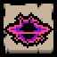

Portals are enigmatic entities that appear  on many floors/
on many floors/ only in
only in  The Void. They continuously spawn enemies until they are destroyed or spawn a certain number of enemies.
The Void. They continuously spawn enemies until they are destroyed or spawn a certain number of enemies.
Portals spawn different enemies depending on the floor they appear on.
In  The Void, Portals spawn enemies based on the theme of the room they are in.
The Void, Portals spawn enemies based on the theme of the room they are in.
List of possible spawns
Chapter 1
| Entity | ID | Description |
|---|---|---|
| Frowning Gaper |
10.0 | Walks towards Isaac, dealing contact damage. They start out with their eyes closed, but when they gain line of sight with Isaac, their eyes open and they permanently move faster. Usually turns into a |
| Pooter |
14.0 | Slowly drifts toward Isaac, occasionally firing a single blood shot at him. Does not deal contact damage. |
| Mulligan |
16.0 | Walks around the room, avoiding Isaac. Upon death, spawns several flies, which can be |
| Attack Fly |
18.0 | Red fly that follows Isaac and deals contact damage. |
| Hopper |
29.0 | Slowly hops around the room, doing contact damage. Can turn into a Flaming Hopper by jumping into |
| Spider |
85.0 | Erratically moves around the room. If Isaac gets close to it, it chases him, trying to deal contact damage. |
| Fatty |
208.0 | Slowly walks towards Isaac. Occasionally farts, which pushes Isaac and adjacent enemies away. |
| Dip |
217.0 | Slowly dashes in random directions, dealing contact damage. |
| Round Worm |
244.0 | Pops out of the ground in random locations and spits a blood shot at Isaac if he is in sight. |
Chapter 2
| Entity | ID | Description |
|---|---|---|
| Charger |
23.0 | Slowly moves around the room, charging at Isaac when he gets in its line of sight. |
| Boom Fly |
25.0 | Flies across the room in straight diagonal lines, dealing contact damage. Explodes upon death. |
| Maw |
26.0 | Slowly floats towards Isaac, firing a blood shot at him when he is in their range. |
| Sucker |
61.0 | Flies slowly towards Isaac, exploding into 4 shots in the cardinal directions upon death. |
| Pale Fatty |
208.1 | Slowly walks towards Isaac. Occasionally farts and shoots 6 blood shots in all directions. Has a chance to turn into a Blubber upon death. |
| One Tooth |
234.0 | Follows Isaac and periodically dashes towards him when it gets close. Deals contact damage. |
| Fat Bat |
258.0 | Slowly flies towards Isaac. Tries to align itself diagonally to Isaac and shoots at him when in that alignment. |
Chapter 3
| Entity | ID | Description |
|---|---|---|
| Globin |
24.0 | Chases Isaac, dealing a full heart of contact damage. Upon taking enough damage, it collapses into a pile of goo, which can be killed. Will regenerate after a short period of time if not killed quickly. |
| Brain |
32.0 | Slowly crawls around the room, leaving a trail of Red Creep. |
| Leaper |
34.0 | Hops around the room, doing contact damage. Occasionally jumps high into the air, dropping down onto Isaac's position while firing 4 blood shots in the cardinal directions. |
| Baby |
38.0 | Slowly floats towards Isaac and fires a blood shot at him. Occasionally teleports and reappears elsewhere. |
| Knight |
41.0 | Moves erratically around the room and charges towards Isaac when in line of sight. Can only be damaged from behind. |
| Fat Sack |
209.0 | Slowly walks towards Isaac. Occasionally leaps off-screen and attempts to land on Isaac, leaving a puddle of Red Creep and shooting 6 blood shots in all directions where it lands. Has a chance to turn into a Blubber upon death. |
Death's Head |
212.0 | Invulnerable enemy that moves diagonally around the room, dealing contact damage. Dies when the room is cleared. |
| Bony |
227.0 | Wanders around the room and throws a bone at Isaac when he is in sight. |
Tumor |
229.0 | Moves around the room diagonally, occasionally firing 6 blood shots in all directions. Fires more often upon getting damaged. |
Chapter 4
| Entity | ID | Description |
|---|---|---|
| Clotty |
15.0 | Randomly wanders around the room, firing 4 blood shots in the cardinal directions. |
| Brain |
32.0 | Slowly crawls around the room, leaving a trail of Red Creep. |
| Leech |
55.0 | Quickly charges towards Isaac when he gets in its line of sight. |
| Lump |
56.0 | Fires 3 spread blood shots at Isaac when he gets in its line of sight. Will burrow underground and reappear elsewhere after firing. |
| Para-Bite |
58.0 | Moves towards Isaac, dealing contact damage. Can burrow underground and reappear elsewhere. |
| Fred |
59.0 | Hops out of the ground and burrows elsewhere, firing 4 blood shots in the cardinal directions. Occasionally fires red Ipecac shots at Isaac. |
| Mobile Host |
204.0 | Acts like the Host, but follows Isaac and deals contact damage. |
Chapter 5
| Entity | ID | Description |
|---|---|---|
| Baby |
38.0 | Slowly floats towards Isaac and fires a blood shot at him. Occasionally teleports and reappears elsewhere. |
| Holy Leech |
55.2 | Quickly charges towards Isaac when he gets in its line of sight. Explodes upon death. Spawns with an Eternal Fly circling it, which instantly dies when the Holy Leech explodes. |
| Keeper |
86.0 | Hops around the room, firing 2 blood shots in a V formation at Isaac. Upon damaging Isaac, Isaac drops 2 coins on the ground but loses 3. |
| Hanger |
90.0 | Floats around the room, firing 3 spread blood shots at Isaac. Upon damaging Isaac, Isaac drops 2 coins on the ground but loses 3. Spawns with an |
| Wizoob |
219.0 | Disappears, then appears near Isaac and spits a cluster of spectral tears at him. |
| Bony |
227.0 | Wanders around the room and throws a bone at Isaac when he is in sight. |
| Lil' Haunt |
260.0 | Floats toward Isaac and occasionally fires a blood shot at him, predicting his movements. |
Lil Portal
Lil Portals are entities that only appear in  Mausoleum and
Mausoleum and  Gehenna. They continuously spawn fly and spider enemies until they are destroyed. There can be a max of 4 spawned monsters alive at once. Monsters they can spawn include:
Gehenna. They continuously spawn fly and spider enemies until they are destroyed. There can be a max of 4 spawned monsters alive at once. Monsters they can spawn include:
| Entity | ID | Description |
|---|---|---|
| Attack Fly |
18.0 | Red fly that follows Isaac and deals contact damage. |
| Sucker |
61.0 | Flies slowly towards Isaac, exploding into 4 shots in the cardinal directions upon death. |
| Ink |
61.3 | Flies slowly towards Isaac. Fires four shots in the ordinal directions and leaves a puddle of slowing Black Creep upon death. |
| Moter |
80.0 | Follows Isaac, similar to |
| Spider |
85.0 | Erratically moves around the room. If Isaac gets close to it, it chases him, trying to deal contact damage. |
| Big Spider |
94.0 | Erratically moves around the room. If Isaac gets close to it, it chases him, trying to deal contact damage. Spawns two Spiders upon death. |
| Small Crazy Long Legs |
207.1 | Chases Isaac, dealing touch damage. Occasionally stops to spit 4 blood shots in the diagonal directions. |
| Level 2 Fly |
214.0 | Flies toward Isaac erratically, dealing contact damage. |
| Level 2 Spider |
215.0 | Crawls around the room erratically, following Isaac and dealing contact damage. Can jump small distances. |
| Full Fly |
249.0 | Flies toward Isaac erratically, dealing contact damage. Releases 6 bullets in all directions upon death. |
| Swarm Spider |
884.0 | Very erratically hops toward Isaac in large groups, dealing contact damage. |
Lil Portal (Flies Only)
There is a variant of the Lil Portal with the ID 306.1.1 that looks and behaves identically to regular Lil Portals but will only spawn Fly related monsters from its regular pool.
Entrance Portal
A special version of the Portal (dubbed the "Entrance Portal" to avoid confusion) serves as the entrance to  The Void. It is found in
The Void. It is found in  ???, but can also be found after defeating
???, but can also be found after defeating  Mom (5% chance and only if Isaac has 10+ tear damage or 20+ items),
Mom (5% chance and only if Isaac has 10+ tear damage or 20+ items),  Mom's Heart/
Mom's Heart/  It Lives (10% chance),
It Lives (10% chance),  Isaac/
Isaac/  Satan (15% chance),
Satan (15% chance),  ???/
???/  The Lamb (20% chance), or
The Lamb (20% chance), or  Mega Satan (50% chance).
The Entrance Portal room in ??? gets darker the closer the player is to the portal.
Mega Satan (50% chance).
The Entrance Portal room in ??? gets darker the closer the player is to the portal.
Unlockable Achievements

Black Hole - Defeat 20 Portals.
Notes
- Charming a Portal with
 Mom's Eyeshadow or similar items will cause the Portal to spawn permanently charmed enemies similar to the
Mom's Eyeshadow or similar items will cause the Portal to spawn permanently charmed enemies similar to the  Friendly Ball.
Friendly Ball.
- As a result, a permanently charmed Death's Head can spawn from charmed Portals on Chapter 3 and remain permanently invulnerable. This is the only known method of charming an invulnerable enemy.
- As a result, a permanently charmed
- If a portal is spawned in
 ???,
???,  Chest,
Chest,  Dark Room or
Dark Room or 
 Home via Debug Console, the Portal will despawn a few seconds before spawning any monster.
Home via Debug Console, the Portal will despawn a few seconds before spawning any monster. - If Portals aren't unlocked, certain enemies will spawn in their rooms instead, depending on the floor the room is in. For instance, Frowning Gapers spawn as Portal placeholders on Chapter 1 floors, whereas Vises spawn as Portal placeholders on Chapter 4 floors.
- It is often wise to instantly run into portals with orbitals after entering the room, if possible. Catching the small window timeframe for this almost always results in their instant death without any consequences.
Gallery
-
The room darkening as the player approaches the portal.
-
The Entrance Portal next to the Chest after defeating Isaac. Notice the distortion effect on the chest.
-
A portal's idle animation, as found in the game files.


Trivia
- Before v1.06.0185, portals continually spawned enemies until they were defeated.
- Portals were able to spawn Bosses such as
 The Haunt on floors such as the
The Haunt on floors such as the  Cathedral. This was later removed.
Cathedral. This was later removed. - As of Booster Pack #5, Portals will now leave a Purple "blood" splatter when killed by the player. This effect is only for aesthetic purposes. Formerly, they left the generic Red blood splatter.
- Lil Portals resemble Warp Zones from Super Meat Boy.